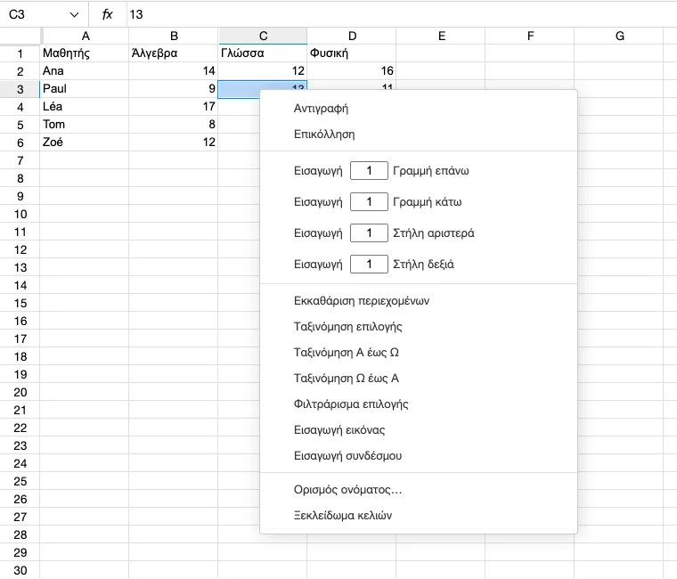

Γραμμές και στήλες
Μέγεθος
| Ενέργεια | Αποτέλεσμα |
|---|---|
| σύρσιμο του δεξιού ορίου κεφαλίδας στήλης | αλλάζει το πλάτος |
| σύρσιμο του κάτω ορίου κεφαλίδας γραμμής | αλλάζει το ύψος |
| δεξί κλικ στην κεφαλίδα › Πλάτος στήλης, Ύψος γραμμής | μέγεθος σε pixel, για όλες τις επιλεγμένες στήλες ή γραμμές |
Εισαγωγή, διαγραφή
Δεξί κλικ σε κελί ή κεφαλίδα: Εισαγωγή 1 Γραμμή επάνω, Εισαγωγή 1 Γραμμή κάτω, Εισαγωγή 1 Στήλη αριστερά, Εισαγωγή 1 Στήλη δεξιά. Το πλήθος γράφεται στο πεδίο. Δεξί κλικ σε κεφαλίδα: Διαγραφή επιλεγμένων Γραμμή, Διαγραφή επιλεγμένων Στήλη.

Οι τύποι προσαρμόζονται: οι αναφορές τους ακολουθούν τα μετακινημένα κελιά. Το όριο είναι 10 000 γραμμές και 1 000 στήλες.
Απόκρυψη
Δεξί κλικ στην κεφαλίδα › Απόκρυψη επιλεγμένων Γραμμή, Απόκρυψη επιλεγμένων Στήλη. Τα κρυφά κελιά υπολογίζονται ακόμη. Για να ξαναφανούν, επιλέξτε τις κεφαλίδες γύρω τους, έπειτα δεξί κλικ › Εμφάνιση.
Σταθεροποίηση
Οι σταθεροποιημένες γραμμές και στήλες μένουν ορατές κατά την κύλιση. Επιλέξτε το οριακό κελί, έπειτα ή Προβολή › Πάγωμα:
| Εντολή | Μένουν ορατές |
|---|---|
| Πάγωμα έως την τρέχουσα γραμμή | οι γραμμές ως και εκείνη του κελιού |
| Πάγωμα έως την τρέχουσα στήλη | οι στήλες ως και εκείνη του κελιού |
| Πάγωμα έως το τρέχον κελί | και οι δύο |
| Ακύρωση παγώματος | τίποτα ιδιαίτερο |
Για να μένει η γραμμή κεφαλίδας: κλικ σε κελί της γραμμής 1, Πάγωμα έως την τρέχουσα γραμμή.